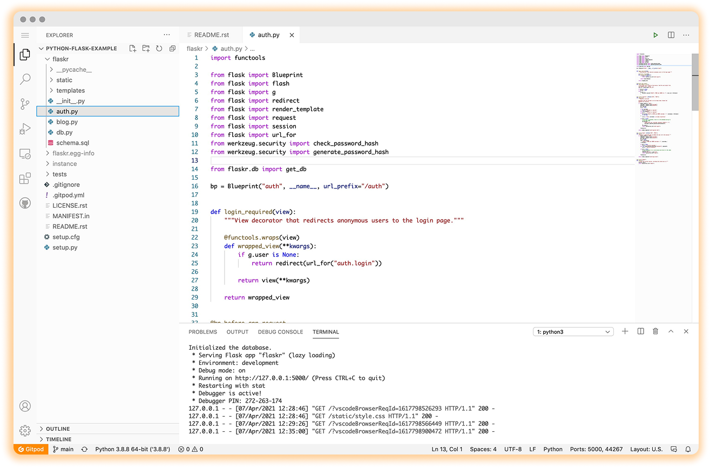

Always
Ready to Code.
Spin up fresh, automated dev environments
for each task, in the cloud, in seconds.
Open a workspace.
Start from any Git context.
.png)
.png)
Select project,
check dependencies, checkout branch, view
readme.txt, install tools, run build, run test,
start coding.
Think CI/CD for dev environments
We invented prebuilds so application code, configuration and infrastructure can all be stored as machine-executable code in your git repositories and applied to dev environments automatically and continuously.
.png)
Remote-first. Secure by design.
You no longer need an over-powered laptop to code, Gitpod works just as smoothly on a Chromebook or iPad. All you need is a browser. Gitpod centralizes all source code and never stores it on insecure machines and networks.
.png)
Chrome Extension
.png)
Firefox Extension
Used by 400,000+ developers.
GitPod is incredibly cool.
In my opinion, this is a big step in open source software contribution. I'm excited to see where we go from here.
.png)
Creator and Co-founder@foremand
@ThePracticalDevLet's say we were overwhelmed how smooth @gitpod workspaces creation & own Docker image for workspaces worked.
Plus, installing @code extensions from the store and integrating @gitlab CI. That blew my mind entirely, and that is hard
.png)
Developer Evangelist@GitLab
Look at any PR (pull request) in a full coding environment where you can edit, build, and test the PR code, by just prepending "gitpod.io#" to the PR URL. Super useful for reviewing/testing stuff without having to check it out locally!
.png)
Creator@PrometheusIO
.png)
.png)
.png)
.png)
.png)
.png)
.png)
.png)
.png)
.png)
.png)
.png)
Get started now
Connect Git repository
Select a Git provider to start with an existing
project from any Git context.
Or prefix any GitLab, GitHub or Bitbucket URL with
Launch an example workspace
Dive into one of our example workspaces
.png)
Node or TypeScript
.png)
Python
.png)
Go
.png)
Rus
.png)
Java
.png)
Svelte